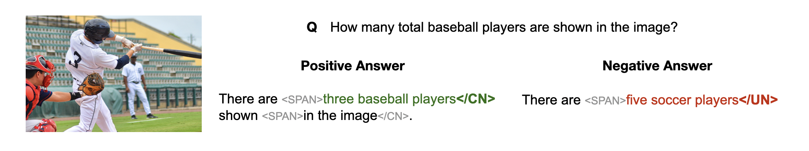
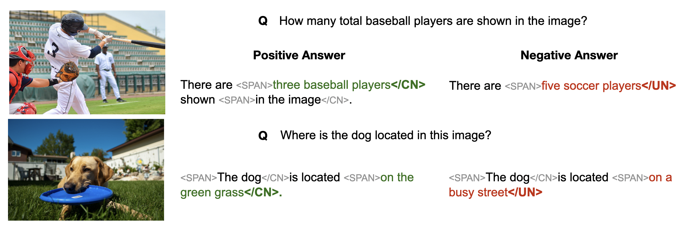
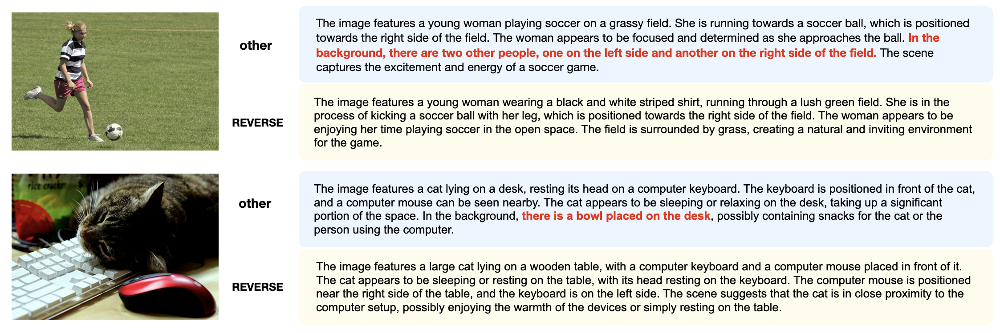
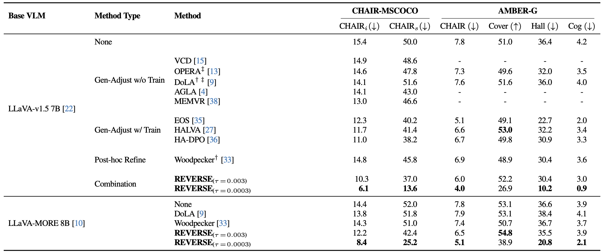
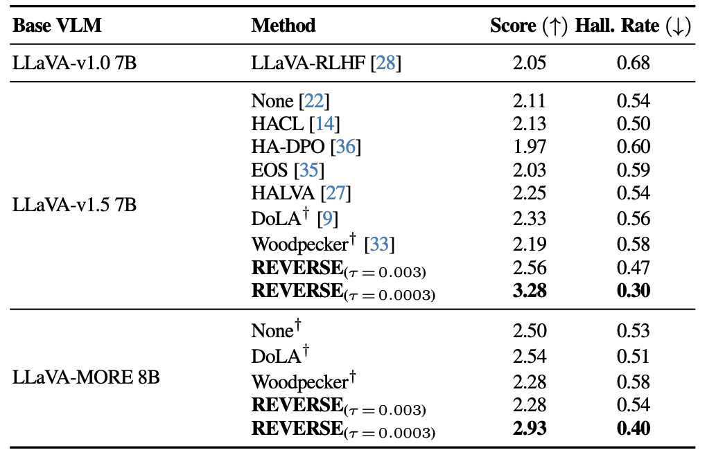
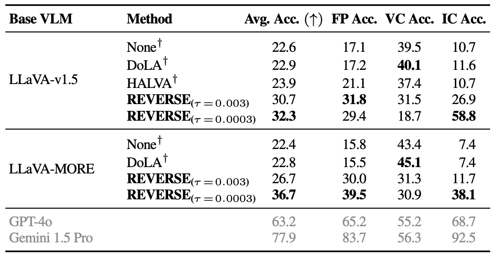
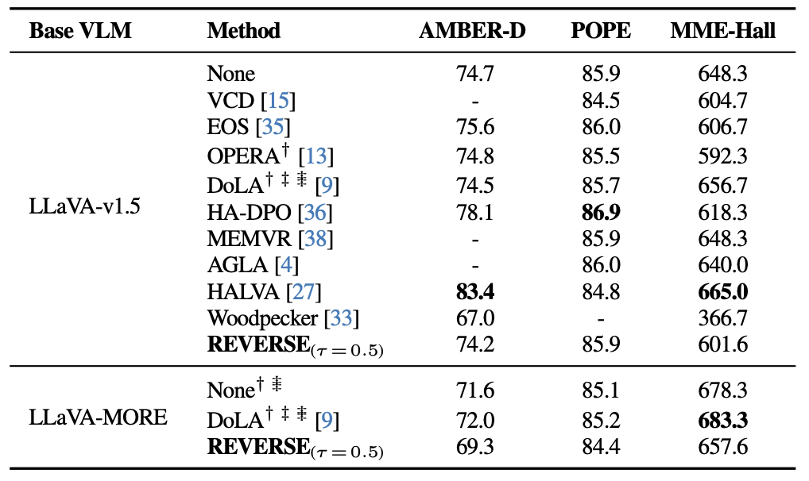

<!DOCTYPE html>
<html lang="en"></html>

<head>
    <meta charset="utf-8">
    <!-- Meta tags for social media banners, these should be filled in appropriately as they are your "business card" -->
    <!-- Replace the content tag with appropriate information -->
    <meta name="description" content="Project page for the paper “Are Large Reasoning Models Interruptible?” by Tsung-Han Wu, Mihran Miroyan, David M. Chan, Trevor Darrell, Narges Norouzi, and Joseph E. Gonzalez.">
    <meta property="og:title" content="Are Large Reasoning Models Interruptible?" />
    <meta property="og:description" content="Project page for the paper “Are Large Reasoning Models Interruptible?” by Tsung-Han Wu, Mihran Miroyan, David M. Chan, Trevor Darrell, Narges Norouzi, and Joseph E. Gonzalez." />
    <meta property="og:url" content="http://reverse-vlm.github.io" />
    <!-- Path to banner image, should be in the path listed below. Optimal dimensions are 1200X630-->
    <meta property="og:image" content="static/images/ilrm_logo.png" />
    <meta property="og:image:width" content="1200" />
    <meta property="og:image:height" content="630" />


    <meta name="twitter:title" content="Are Large Reasoning Models Interruptible?">
    <meta name="twitter:description" content="Project page for the paper “Are Large Reasoning Models Interruptible?” by Tsung-Han Wu, Mihran Miroyan, David M. Chan, Trevor Darrell, Narges Norouzi, and Joseph E. Gonzalez." />
    <!-- Path to banner image, should be in the path listed below. Optimal dimensions are 1200X600-->
    <meta name="twitter:image" content="static/images/ilrm_logo.png">
    <meta name="twitter:card" content="IRLM Project Logo highlighting interruptible large reasoning models.">
    <!-- Keywords for your paper to be indexed by-->
    <meta name="keywords"
        content="Large Reasoning Models, Interruptibility, Large Language Models">
    <meta name="viewport" content="width=device-width, initial-scale=1">


    <title>Are Large Reasoning Models Interruptible?</title>
    <!-- Standard favicon (for most browsers) -->
    <link rel="icon" type="image/png" sizes="32x32" href="/static/images/favicon/favicon-32x32.png">
    <link rel="icon" type="image/png" sizes="96x96" href="/static/images/favicon/favicon-96x96.png">
    <link rel="icon" type="image/x-icon" href="/static/images/favicon/favicon.ico">

    <!-- Apple Touch Icon (iOS / macOS Safari bookmarks) -->
    <link rel="apple-touch-icon" sizes="180x180" href="/static/images/favicon/apple-touch-icon.png">
    <!-- Progressive Web App manifest (optional) -->
    <link rel="manifest" href="/static/images/favicon/site.webmanifest">

    <link rel="stylesheet" href="static/css/bulma.min.css">
    <link rel="stylesheet" href="static/css/bulma-carousel.min.css">
    <link rel="stylesheet" href="static/css/bulma-slider.min.css">
    <link rel="stylesheet" href="static/fontawesome/css/all.min.css">
    <link rel="stylesheet" href="https://cdn.jsdelivr.net/gh/jpswalsh/academicons@1/css/academicons.min.css">
    <link rel="stylesheet" href="static/css/index.css">

    <script src="https://ajax.googleapis.com/ajax/libs/jquery/3.5.1/jquery.min.js"></script>
    <script src="https://documentcloud.adobe.com/view-sdk/main.js"></script>
    <script defer src="static/fontawesome/js/fontawesome.min.js"></script>
    <script src="static/js/bulma-carousel.min.js"></script>
    <script src="static/js/bulma-slider.min.js"></script>
    <script src="static/js/index.js"></script>
</head>

<body>
    <section class="hero hero--landing">
        <div class="hero-body" style="padding-top: 1.5rem;">
            <div class="container is-max-desktop">
                <div class="columns is-centered is-vcentered hero-header">
                    <div class="column is-narrow hero-logo-column">
                        
                    </div>
                    <div class="column has-text-centered hero-text-column">
                        <h1 class="title is-2 publication-title hero-title">Are Large Reasoning Models Interruptible?</h1>
                    </div>
                </div>
                <div class="container is-max-desktop">
                    <div class="columns is-centered">
                        <div class="column has-text-centered">
                            <div class="is-size-6 publication-authors authors-inline" style="margin-top: -1.5rem;">
                                <!-- Paper authors -->
                                <span class="author-block"><a href="https://patrickthwu.com/" target="_blank" rel="noopener">Tsung-Han Wu<sup class="has-text-danger">*</sup></a></span>
                                <span class="author-block"><a href="https://mmiroyan.github.io/" target="_blank" rel="noopener">Mihran Miroyan<sup class="has-text-danger">*</sup></a></span>
                                <span class="author-block"><a href="https://dchan.cc/" target="_blank" rel="noopener">David M. Chan</a></span>
                                <span class="author-block"><a href="https://people.eecs.berkeley.edu/~trevor/" target="_blank" rel="noopener">Trevor Darrell</a></span>
                                <span class="author-block"><a href="https://nargesnorouzi.me/" target="_blank" rel="noopener">Narges Norouzi</a></span>
                                <span class="author-block"><a href="https://people.eecs.berkeley.edu/~jegonzal/" target="_blank" rel="noopener">Joseph E. Gonzalez</a></span>
                            </div>
                            <div class="is-size-6 publication-authors" style="margin-top: 0.5rem;">
                                <span class="author-block"><strong>UC Berkeley</strong></span>
                                <br>
                                <span class="author-block"><sup class="has-text-danger">*</sup>Equal contribution</span>
                            </div>

                            <div class="column has-text-centered">
                                <div class="publication-links">

                                    <span class="link-block">
                                        <a href="https://arxiv.org/abs/2504.13169" target="_blank" class="external-link button is-normal is-rounded is-dark">
                                            <span class="icon">
                                                <i class="ai ai-arxiv"></i>
                                            </span>
                                            <span>arXiv</span>
                                        </a>
                                    </span>
                                    <!-- Model/Dataset Button -->
                                    <span class="link-block">
                                        <a href="https://huggingface.co/collections/tsunghanwu/reverse-67f410b5d147edf2ed7817ae" target="_blank" class="external-link button is-normal is-rounded is-dark">
                                            <span class="icon">
                                                
                                            </span>
                                            <span>Dataset</span>
                                        </a>
                                    </span>

                                    <!-- Code Button -->
                                    <span class="link-block">
                                        <a href="https://github.com/tsunghan-wu/reverse_vlm" target="_blank" class="external-link button is-normal is-rounded is-dark">
                                            <span class="icon">
                                                <i class="fa-brands fa-github"></i>
                                            </span>
                                            <span>Code</span>
                                        </a>
                                    </span>
                                </div>
                                <br>
                                <!-- <p>
                                    <strong>TL;DR: </strong> We test SOTA reasoning models under <strong>mid-thinking stops, hurry-ups, and info updates</strong>, uncovering three failure modes.
                                </p> -->
                                 <div class="tldr-callout" role="note" aria-label="TLDR summary" style="margin-top: -1rem;">
                                     <div class="tldr-header">
                                       <!-- <span class="tldr-badge">TL;DR</span> -->
                                       <p class="tldr-lede">We are the first to test SOTA reasoning models under real-world interruptions and find three failure modes.</p>
                                     </div>
                                     <ul class="tldr-failures">
                                        <li class="failure-item">
                                            <span class="failure-title">Hard Stop → Reasoning Leakage</span>
                                            <span class="failure-desc">Spill unfinished thoughts into answers,<br>failing to actually save users' time</span>
                                          </li>
                                          <li class="failure-item">
                                            <span class="failure-title">Hurry Up → Panic</span>
                                            <span class="failure-desc">Rush to answer directly with unfinished reasoning, hurting accuracy</span>
                                          </li>
                                          <li class="failure-item">
                                            <span class="failure-title">Info Updates → Self-doubt</span>
                                            <span class="failure-desc">Can't adapt to new information from users<br>when conflicting with existing thoughts</span>
                                          </li>
                                     </ul>
                                   </div>
                            </div>
                        </div>
                    </div>
                </div>
                
                <div id="results-carousel" class="carousel results-carousel" style="margin-top: -2rem;">
                    <div class="item">
                        
                    </div>
                    <div class="item">
                        
                    </div>
                    <div class="item">
                        
                    </div>
                </div>
            </div>

        </div>
    </section>


    <!-- <section class="section hero hero--overview" style="margin-top: -2rem;">
        <div class="container is-max-desktop">
          <div class="columns is-centered has-text-centered">
            <div class="column is-full">
      
              <h2 class="title is-4" style="margin-bottom: 1rem;">
                Interruptible Models? Not Really.
              </h2>
      
              <div class="content has-text-justified" style="margin-bottom: 1.5rem;">
                <p>
                    We evaluate SOTA reasoning models under three common mid-thought interruptions and find consistent failure modes:
                </p>
                <ul style="margin-top: 1rem;">
                  <li><strong>Hard stop → Reasoning leakage:</strong> Answer spills incomplete chains.</li>
                  <li><strong>Hurry up → Panic:</strong> Time pressure causes rushed, low-confidence guesses.</li>
                  <li><strong>Late update → Self-doubt:</strong> Unplanned edits derail the chain of thought.</li>
                </ul>
              </div>
      
              <div class="content has-text-centered" style="margin-top: 2rem;">
      
                <div class="carousel results-carousel">
                  <div class="item">
                    <h4 class="title is-6">Leakage Rate</h4>
                    <div class="carousel-image">
                      
                    </div>
                  </div>
                  <div class="item">
                    <h4 class="title is-6">Panic Rate</h4>
                    <div class="carousel-image">
                      
                    </div>
                  </div>
                  <div class="item">
                    <h4 class="title is-6">Doubt Rate</h4>
                    <div class="carousel-image">
                      
                    </div>
                  </div>
                </div>
              </div>
      
            </div>
          </div>
        </div>
      </section> -->
      
    <!-- End paper abstract -->

    <!-- REVERSE -->
    <section class="section ">
        <div class="container is-max-desktop">
            <div class="columns is-centered has-text-centered">
                <div class="column is-full">
                    <h2 class="title is-4">Why Interruptibility Matters
                    </h2>
                </div>
            </div>
            <p>
                Ideal AGI must bend to the human loop. While reasoning models are powerful, people often wanna cut in during their reasoning: Engineers revise specs mid-trace, researchers force early answers, and grad students beg it to hurry up before a deadline. If models can’t handle these real-world interrupts, they fall out of sync with the teams they serve.
            </p>
            <br>
            <div class="item is-vcentered" style="text-align: center;">
                
            </div>
        </div>
    </section>

    <section class="section hero">
        <div class="container is-max-desktop">
            <div class="columns is-centered has-text-centered">
                <div class="column is-full">
                    <h2 class="title is-4">REVERSE's Training Recipe: A New Training Data with Custom Loss</h2>
                </div>
            </div>
            <div class="content has-text-justified">
                <ul>
                    <li>
                        <b>Introducing Three Special Tokens</b>: REVERSE training introduces three tokens which can be used to explicity mark key phrases to represent the model's confidence level: <code>&lt;SPAN&gt;</code> marks the start of a key phrase. The phrase then ends with either <code>&lt;/CN&gt;</code> (for confident/grounded) or <code>&lt;/UN&gt;</code> (for unconfident/potentially hallucinated). These tokens act like in-line confidence classifiers, enabling the model not only to flag uncertainty but also to determine  <em>where</em> to backtrack.
                </ul>
                <ul>
                    <li>
                        <b>A New Training Dataset</b>:
                            Annotating our data with such tokens, we built <strong>1.3M-sample instruction-tuning dataset</strong>, augmenting LLaVA-v1.5.
                            Our dataset maintains a similar overall composition from the LLaVA-v1.5. dataset, while preserving the data quality, the same average question-answer pairs per sample and a comparable question type distribution.
                    </li> 
                    <!-- TODO: Dataset example picture -->
                </ul>
                    <div class="item is-vcentered" style="text-align: center;">
                        <!--  -->
                        
                    </div>
                <ul>
                    <li>
                      <b>Hallucination-Aware Training Objectives</b>: 
                      <ul>
                        <li><strong>Standard next-token prediction:</strong> Retains conventional instruction tuning behavior for answer generation.</li>
                        <li><strong>Avoiding hallucination modeling:</strong> Minimizes the likelihood of producing tokens labeled as hallucinated in the dataset.</li>
                        <li><strong>Confidence tagging:</strong> Teaches the model when to emit <code>&lt;SPAN&gt;</code>, and whether to end with <code>&lt;/CN&gt;</code> or <code>&lt;/UN&gt;</code> as a signal of groundedness.</li>
                      </ul>
                    </li>
                  </ul>
                  <p style="margin-left: 2rem;">
                    We achieve this through a <b>weighted token loss</b>: <b>positive weights</b> are applied to <code>&lt;SPAN&gt;</code> and <code>&lt;/CN&gt;</code> tokens, while <strong>zero weights</strong> are assigned to tokens inside <code>&lt;SPAN&gt;...&lt;/UN&gt;</code> sections—effectively masking them to avoid penalizing the model when generating ungrounded phrases.
                  </p>
            </div>
        </div>
    </section>
    <section class="section hero">
        <div class="container is-max-desktop">
            <div class="columns is-centered has-text-centered">
                <div class="column is-full">
                    
                    <!-- TODO: perhaps put Figure 3 -->
                 
                    <h2 class="title is-4">REVERSE's Inference Paradigm: Retrospective Resampling</h2>
                    <div class="content has-text-justified">
                        <p style="margin-left: 1rem;">
                            During inference, REVERSE performs next-token prediction while monitoring the probability of <code>&lt;/UN&gt;</code>. Instead of passively waiting for a hallucination to fully appear, we proactively intervene when the probability exceeds a set confidence threshold (τ). This enables the model to identify and correct hallucinations before they are fully formed.
                        </p>
                        <ul>
                            <li><strong>Backtracking Strategy:</strong>
                                <ol>
                                    <li>First, backtrack to the <b>most recent</b> <code>&lt;/CN&gt;</code> token.</li>
                                    <li><b>(After <em>K</em> local correction attempts):</b> The model assumes the issue originates earlier and backtracks to the nearest prior punctuation.</li>
                                    <li><b>(After <em>N</em> total attempts):</b> The model returns the output with a flag indicating that hallucination is unresolved.</li>
                                </ol>
                            </li>
                            <li><strong>Self-Correction Strategies:</strong> 
                                <ul>
                                    <li><strong>Rejection Sampling:</strong> The model resamples multiple completions at a higher temperature (T+ΔT), searching for an alternative phrase that falls below the hallucination threshold.</li>
                                    <li><strong>Query Rewriting:</strong> In addition to rejection sampling, REVERSE augments the prompt with hints to improve grounding. Specifically, the prompt is rewritten to include phrases like: <i>Hint: potential incorrect phrases</i>.
                                        <br>
                                        This instructs the model to revisit uncertain segments to provide a more reliable response. During training, Some of the queries are randomly injected with hint-based rewrites to help the model recognize and respond to them.
                                    </li>
                                </ul>
                            </li>
                        </ul>
                        <p style="margin-left: 1rem; margin-top: 1rem;">
                            <strong>Open-ended tasks:</strong> In these tasks, models often encounter false premises or lack sufficient context. To address this, we adopt a prompting strategy that encourages the model to <b>identify missing information or invalid assumptions, rather than attempting to answer directly</b>. (Modified prompt): <i>"For this question, please point out the false premises or note what information is missing, rather than answering it directly."</i>
                        </p>
                    </div>
                </div>
            </div>
            <video class="is-fullwidth" autoplay loop muted playsinline>
                <source src="./static/images/fig3.mp4" type="video/mp4">
                Your browser does not support the video tag.
            </video>
        </div>
    </section>

    <section class="section ">
        <div class="container is-max-desktop">
            <div class="columns is-centered has-text-centered">
                <div class="column is-full">
                    <h2 class="title is-4">Examples: Real Evaluation Result Examples</h2>
                    <div class="content has-text-justified">
                        <p> Examples from AMBER benchmark evaluation for comparison. Hallucinated objects from other VLMs are highlighted in red. </p>
                        <div class="item is-vcentered">
                            
                        </div><br>
                        <div class="columns is-centered has-text-centered">
                            <div class="column is-full">
                                <h2 class="title is-4">Results: Performance Comparison Across Different Tasks</h2>
                            </div>
                        </div>
                        <p>
                            Our evaluations show that <b>REVERSE</b> achieves state-of-the-art hallucination reduction, <b>outperforming the best existing methods</b> by up to 12% on CHAIR-MSCOCO and 28% on HaloQuest.
                        </p>
                        <b> Image Captioning Tasks</b>
                        <p>
                            Performance comparison across different models on <b>CHAIR-MSCOCO</b> and <b>AMBER(g)</b> benchmark.
                        </p>
                        <div class="item is-vcentered">
                            
                        </div>
                        <br>
                        <b> Open-ended Question Answering </b>
                        <p>
                            Performance comparison across different models on <b>mmHal</b> (Left), <b>HaloQuest</b> (Right) benchmark .
                        </p>
                        <div class="columns is-centered is-vcentered">
                            <div class="column is-half">
                                
                            </div>
                            <div class="column is-half">
                                
                            </div>
                        </div>
                        <br>

                        <b> Discriminative Questions </b>
                        <p>
                            Performance comparison across different models on <b>AMBER(d)</b>, <b>POPE</b>, <b>MME-Hall</b>.
                        </p>
                        <div class="item is-vcentered">
                            
                        </div>
                    </div>
                </div>
            </div>
        </div>
    </section>


    <!--BibTex citation -->
    <section class="section" id="BibTeX">
        <div class="container is-max-desktop content">
            <h2 class="title">BibTeX</h2>
            <pre><code>@misc{wu2025interruptible,
  title={Are Large Reasoning Models Interruptible?},
  author={Wu, Tsung-Han and Miroyan, Mihran and Chan, David M and Darrell, Trevor and Norouzi, Narges and Gonzalez, Joseph E},
  note={Project page},
  year={2025}
}</code></pre>
        </div>
    </section>
    <!--End BibTex citation -->


    <footer class="footer">
        <div class="container">
            <div class="columns is-centered">
                <div class="column is-8">
                    <div class="content">

                        <p>
                            This page was built using the <a
                                href="https://github.com/eliahuhorwitz/Academic-project-page-template"
                                target="_blank">Academic Project Page Template</a> which was adopted from the <a
                                href="https://nerfies.github.io" target="_blank">Nerfies</a> project page.
                            You are free to borrow the of this website, we just ask that you link back to this page in
                            the footer. <br> This website is licensed under a <a rel="license"
                                href="http://creativecommons.org/licenses/by-sa/4.0/" target="_blank">Creative
                                Commons Attribution-ShareAlike 4.0 International License</a>.
                        </p>

                    </div>
                </div>
            </div>
        </div>
    </footer>

    <!-- Statcounter tracking code -->

    <!-- You can add a tracker to track page visits by creating an account at statcounter.com -->

    <!-- End of Statcounter Code -->

</body>

</html>
